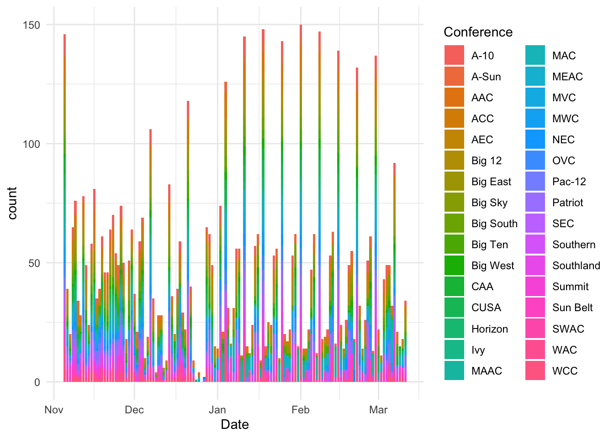
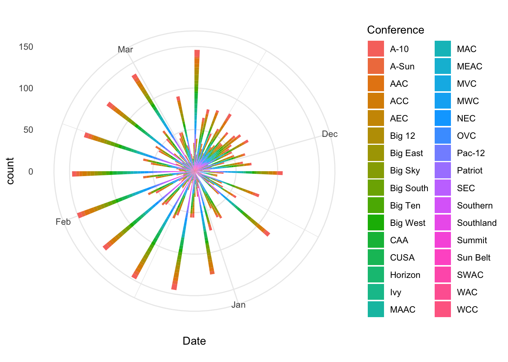
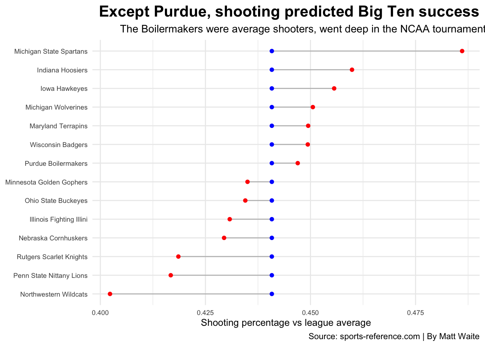

Chapter 19 Lollipop charts
Second to my love of waffle charts because I’m always hungry, lollipop charts are an excellently named way of showing the difference between two things on a number line – a start and a finish, for instance. Or the difference between two related things. Say, turnovers and assists. They aren’t a geom, specifically, but you can assemble them out of points and segments, which are geoms.
## Warning: Missing column names filled in: 'X1' [1]## Parsed with column specification:
## cols(
## .default = col_double(),
## Date = col_date(format = ""),
## HomeAway = col_character(),
## Opponent = col_character(),
## W_L = col_character(),
## Blank = col_logical(),
## Team = col_character(),
## Conference = col_character(),
## season = col_character()
## )## See spec(...) for full column specifications.For the first example, let’s look at the difference between a team’s shooting performance and the conference’s shooting performance as a whole. To get this, we’re going to add up all the shots made by the conference, all the attempts taken by the conference, and then mutate a percentage based on that.
conferenceshooting <- logs %>%
group_by(Conference) %>%
summarise(totalshots = sum(TeamFG), totalattempts = sum(TeamFGA)) %>%
mutate(conferenceshootingpct = totalshots/totalattempts)## `summarise()` ungrouping output (override with `.groups` argument)Now I’m going to do the same with teams.
teamshooting <- logs %>%
group_by(Team, Conference) %>%
summarise(totalshots = sum(TeamFG), totalattempts = sum(TeamFGA)) %>%
mutate(teamshootingpct = totalshots/totalattempts)## `summarise()` regrouping output by 'Team' (override with `.groups` argument)The last thing I need to do is join them together. So each team will have the conference shooting percentage as well as their own.
I have every team in college basketball, but that’s insane.
So this takes a little doing, but the logic is pretty clear in the end.
A lollipop chart is made up of two things – a line between two points, and two points. So we need a geom_segment and two geom_points. And because they get layered starting at the bottom, our segment is first. A geom segment is made up of two things – an x and a y value, and an x and y end. In this case, our x and xend are the same – the Team – and our y and yend are our two stats. For our points, both x values are the Team and the y is the different stats. What that does is put each point on the same line.
ggplot(big10) +
geom_segment(aes(x=Team, xend=Team, y=teamshootingpct, yend=conferenceshootingpct), color="grey") +
geom_point(aes(x=Team, y=teamshootingpct), color="red") +
geom_point(aes(x=Team, y=conferenceshootingpct), color="blue") +
coord_flip()
We can do better by changing the order of the teams by their shooting performance and giving it some theme love.
ggplot(big10) +
geom_segment(aes(x=reorder(Team, teamshootingpct), xend=Team, y=teamshootingpct, yend=conferenceshootingpct), color="grey") +
geom_point(aes(x=reorder(Team, teamshootingpct), y=teamshootingpct), color="red") +
geom_point(aes(x=reorder(Team, teamshootingpct), y=conferenceshootingpct), color="blue") +
coord_flip() +
labs(x="", y="Shooting percentage vs league average", title="Except Purdue, shooting predicted Big Ten success", subtitle="The Boilermakers were average shooters, went deep in the NCAA tournament", caption="Source: sports-reference.com | By Matt Waite") +
theme_minimal() +
theme(
plot.title = element_text(size = 16, face = "bold", hjust = 1),
plot.subtitle = element_text(hjust = 1.3),
axis.title = element_text(size = 10),
axis.title.y = element_blank(),
axis.text = element_text(size = 7),
axis.ticks = element_blank()
)
What if we wanted to order them by wins? Our data has a column called W_L that lists if the team won or lost. The problem is it doens’t just say W or L. If the game went to overtime, it lists that. That complicates counting wins. Here’s a trick to find a string of text and make that. It’s called grepl and the basic syntax is grepl for this string in this field and then do what I tell you. In this case, we’re going to create a new field called winloss look for W or L (and ignore any OT notation) and give wins a 1 and losses a 0.
So let’s look at turnovers and assists. We’ll call it give and take. Does the difference between those two things indicate something when we sort them by wins?
giveandtake <- winlosslogs %>% group_by(Conference, Team) %>% summarise(turnovers = sum(TeamTurnovers), assists = sum(TeamAssists), wins=sum(winloss)) ## `summarise()` regrouping output by 'Conference' (override with `.groups` argument)ggplot(big10gt) +
geom_segment(aes(x=reorder(Team, wins), xend=Team, y=turnovers, yend=assists), color="grey") +
geom_point(aes(x=reorder(Team, wins), y=turnovers), color="red") +
geom_point(aes(x=reorder(Team, wins), y=assists), color="blue") +
coord_flip()
Short answer: Not really. Something you need to get used to in data visualization – not everything works. Sometimes you find things, sometimes you don’t. Don’t publish a graphic that doesn’t find anything. Let it stay in your notebook as an idea that didn’t pan out.